Concours des foires aux vins 2014 Nos 50 bouchons d'or
Après une implacable sélection notre jury vous propose ses 50 bouchons d'or, 50 bouteilles offrant le meilleur rapport qualité prix. Pour y arriver 1000 bouteilles ont été goûtées, plus de 130 jugées intéressantes ont fait l'objet d'une dégustation à l'aveugle et seules 50 ont été sélectionnées.
- Tous
- De 3,50
à 6 € - De 6
à 8,50 € - De 8,50
à 10 € - De 10
à 13 € - De 13
à 15 € - De 15
à 20 € - ?
-
Atypique
Vin blanc
Avec un nez complexe aux notes de fruits jaunes mûrs et une ampleur en bouche où s’exprime toute sa minéralité, le meilleur muscadet de notre sélection est très atypique. A marier avec un filet mignon de veau aux champignons. Magasins U15,4
5,90 €
Pierre de schiste, muscadet-sèvre-et-maine sur lie 2010, Vieilles Vignes
Coup de coeur -
Malicieux
Vin blanc
Le moins cher de notre sélection, ce vin démontre qu’il est possible de faire du bel ouvrage à ce niveau de prix. Jouant sur le cépage avec malice mais sans excès, il offre une belle vivacité et du fruité. Chez Leclerc15,1
3,70 €
Touraine blanc 2013, sauvignon, Domaine de la Madelaine
-

Doux
Vin rouge
Son nez de confiture laisse place à une bouche ample et soyeuse avec une belle longueur, rehaussée de notes d’épices douces, finement tannique. Idéal sur une grillade. Chez Casino14,7
4,20 €
Côtes-du-rhône rouge 2012, Château Courac
-
Salin
Vin blanc
D’une belle minéralité aux notes salines, la bouche est citronnée avec des pointes de fruits exotiques et beaucoup de fraîcheur. A savourer avec une assiette d’huîtres. Chez Carrefour Market14,6
3,75 €
Muscadet-sèvre-et-maine sur lie 2013 (fût de chêne), Manoir de la Grelière
-
Gouleyant
Vin blanc
La bouche est croquante sur le fruit, avec une belle matière. Un vin gouleyant, très agréable. Ce plaisir se partage autour d’un plat de charcuterie. Chez Magasins U14,5
5,55 €
Beaujolais-lancié 2011, Gilles Gelin
-
robuste
Vin rouge
D’une grande richesse en tanins, ce vin très bien fait offre beaucoup de mâche tout en restant digeste. A marier avec une viande en sauce. Chez Leclerc13,8
4,95 €
Tessellae, côtes catalanes 2013, Carignan Vieilles Vignes
-
Fruité
Vin rouge
Ce beaujolais, fruité au nez et en bouche, offre une belle structure et des tanins riches, tout en restant très dynamique. Avec une viande en sauce. Chez Intermarché14,3
5,80 €
Morgon 2013, Domaine des Souchons
-
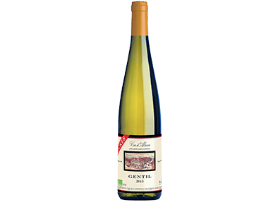
Frais
Vin blanc
Le nez est gourmand et la bouche légère offre une pointe d’amertume très rafraîchissante en finale. A servir avec un filet de sole grillé aux agrumes. Chez Leader Price13,7
4,99 €
Gentil 2013, vin d’Alsace (bio), Jean Becker
-
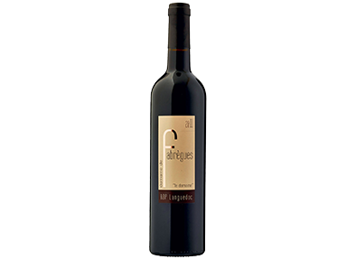
Gourmand
Vin rouge
Ce rouge délicieux séduit par ses arômes de cassis. La bouche est ample, avec beaucoup de finesse, et la finale est une pure gourmandise. Avec une pièce de bœuf grillée. Chez Auchan16,3
5,95 €
Coteaux-du-languedoc rouge 2011, Domaine de Fabrègues
Coup de coeur -
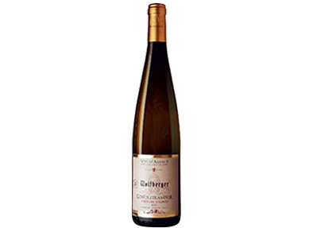
Exotique
Vin blanc
Un bel équilibre pour cet alsacien qui exprime des arômes typiques de fruits exotiques, sans excès. Idéal avec un filet de poisson en papillote à la thaïlandaise. Chez Leclerc15
6,60 €
Gewurztraminer vieilles vignes 2013, Wolfberger
-

Tonique
Vin blanc
Son attaque fraîche sur des notes citronnées laisse place à une belle matière parfaite pour accompagner des poissons cuisinés au beurre ou à la crème. Chez Leclerc15
7,20 €
Reuilly blanc 2013 cuvée tradition, Domaine Claude Lafond
-
Plaisant
Vin rouge
Un beaujolais sur le fruit, extrêmement digeste, qui allie légèreté et équilibre. A l’apéritif avec une planche de charcuterie et fromages. Chez Leclerc14,1
7,49 €
Saint-amour 2013, Domaine du Carjot
-
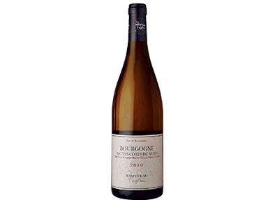
Ample
Vin blanc
Un chardonnay dans toute sa beauté avec des notes de miel, une bouche mûre et concentrée, et une belle fraîcheur. Se déguste avec des cailles aux raisins. Chez Leclerc14,1
7,60 €
Hautes-côtes-de-nuits blanc 2010, Ropiteau
-
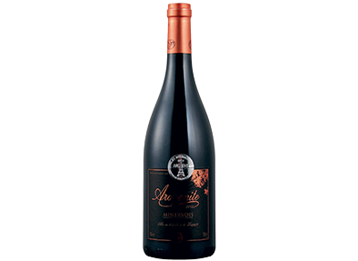
Musclé
Vin rouge
Après un nez légèrement alcooleux, la bouche se fait puissante et gourmande sur la réglisse et les fruits noirs. A marier avec un cassoulet. Chez Magasins U14,1
7,95 €
Minervois 2012, Aragonite
-
Épicé
Vin rouge
Ce pur malbec sait concilier puissance aromatique et tannique. Epicée, la longue finale reste très digeste. Avec une selle d’agneau. sur www.lerepairedebacchus.com14,1
8,40 €
Petit Jammes, cahors 2012, Domaine Pech de Jammes
-
Tendre
Vin rouge
Doux, presque léger, ce côtes-du-rhône séduit par ses notes légèrement épicées, ses arômes de fruits noirs et sa finale tout en finesse. Chez Nicolas13,9
7 €
Saint-Esprit, côtes-du-rhône rouge 2012, Delas
-
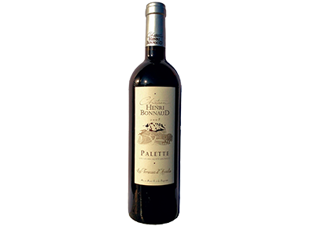
Solaire
Vin rouge
Ce rouge offre puissance et délicatesse. Ses notes de fruits noirs et d’épices douces forment une bouche gourmande. Avec un gibier. Chez Carrefour16
8,90 €
Palette rouge 2008 cuvée les terrasses d’Aurélia, Château Henri Bonnaud
Coup de coeur -
Acidulé
Vin rouge
Coup de cœur de notre jury, ce vin sans soufre offre un plaisir gourmand avec ses arômes de fruits rouges et ses saveurs acidulées. Un vrai plaisir. Chez Monoprix15,8
8,95 €
Chiroubles 2013 cuvée nature, Didier Desvignes
-
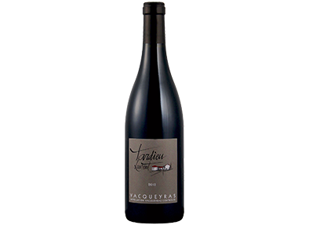
Digeste
Vin rouge
Un bouquet d’épices et de garrigue pour ce vin qui offre gourmandise et puissance en bouche, en restant très digeste. Avec une bavette à l’échalote. Chez Magasins U14,8
9,60 €
Vacqueyras rouge 2012, Tardieu-Laurent
-
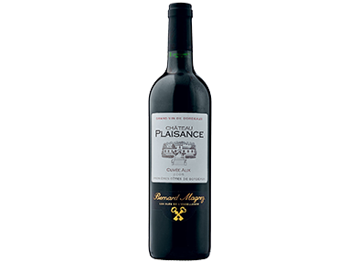
À point
Vin rouge
Un excellent rapport qualité-prix pour ce bordeaux du très grand millésime 2005. Des tanins fondus avec une belle matière soyeuse en bouche. Parfait avec un filet de bœuf. Chez Auchan14,7
8,50 €
Côtes-de-bordeaux rouge 2005 cuvée Alix, Château Plaisance
-
Typique
Vin blanc
Une expression caractéristique du riesling avec son nez légèrement pétrolé, beaucoup de finesse en bouche et une belle matière. Pour accompagner des filets de truite au beurre. Chez Intermarché14,5
8,65 € €
Grand cru Brand, riesling 2011, Henri Ehrhart
-
Léger
Vin rouge
Cet assemblage de gamay et de pinot noir donne un vin facile à aborder, sur le fruit et la légèreté, le croquant et la fraîcheur. A boire jeune. Chez Monoprix14,4
9,90 € €
Coteaux bourguignons rouge 2013, Louis Jadot
-
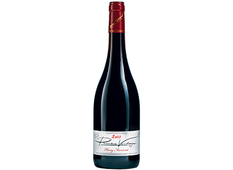
Rafraîssant
Vin rouge
Henry Marionnet propose un vin sur le fruit. La bouche est rafraîchissante grâce à une bonne acidité avec une note poivrée en finale. Un vin d’apéro entre copains. Chez Monoprix14
8,90 € €
Premières vendanges, touraine rouge 2013, Henry Marionnet
-
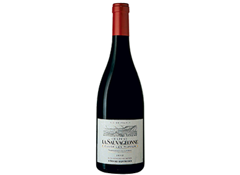
Puissant
Vin rouge
Un vin du Sud qui exprime, dès le nez, toute sa richesse sur des notes de cassis. La bouche est puissante et ronde, la finale, fraîche. Chez Leclerc14
8,50 € €
Terrasses-du-larzac 2012 cuvée Les Ruffes, Château La Sauvageonne
-
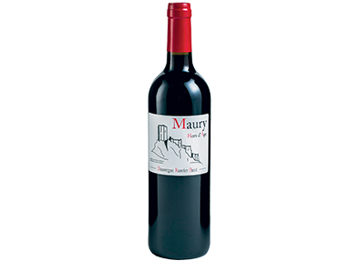
Original
Vin rouge
Ce vin doux naturel du Roussillon à base de grenache présente une belle robe cuivrée et offre des arômes de fruits cuits et d’épices. Un vin de conservation par excellence, à ouvrir à la fin d’un repas comme une pure gourmandise. Chez Carrefour Market16,7
9,90 €
Maury hors d’âge, cuvée Parcé, Dauvergne & Ranvier
Coup de coeur -
Élégant
Vin blanc
Loin des clichés, ce sancerre offre un nez de mangue et beaucoup d’élégance en bouche. Sa belle longueur exprime toute sa minéralité. A servir avec un plateau de fromages de chèvre. sur www.vin-malin.fr15,1
12,70 €
Sancerre blanc 2013, Domaine Raimbault
-
Riche
Vin blanc
Expressif et gourmand, avec un nez aux notes de fruits blancs, ce vin exprime beaucoup de richesse en bouche et une finale amère apportant de la fraîcheur. A déguster avec du lapin. Chez Carrefour15,1
9,90 €
Mâcon-villages blanc 2013, cuvée Terres de pierres, Verget
-
Authentique
Vin blanc
Tout ce que l’on attend d’un bon chablis : de la minéralité et de la vivacité. Parfaits sur des coquillages et des fruits de mer. sur www.millesimes.com15,1
10,50 €
La Sereine, chablis 2010, La Chablisienne
-
Équilibré
Vin rouge
Ce languedoc réussit un très bel équilibre entre densité et minéralité. La fin de bouche est longue et très nette. Délicieux sur un carré d’agneau au thym. chez Carrefour15
9,9 €
Montpeyroux-Languedoc 2011, cuvée Les Truffières (bio), Domaine d’Aupilhac
-
Moelleux
Vin blanc
Un vin moelleux, sans lourdeur, qui offre beaucoup de gourmandise et de fraîcheur. Idéal avec un dessert aux fruits. chez Leclerc15
11,40 €
Jurançon 2011, cuvée Les Castérasses (bio), Domaine Bru-Baché
-
Fleuri
Vin blanc
Après un nez délicat de fleurs blanches, la bouche se fait fraîche et ample pour une très jolie finale. Pour accompagner une pintade en cocotte. chez Nicolas14,6
11 €
Hautes-côtes-de-nuits blanc 2012, Lupé-Cholet
-
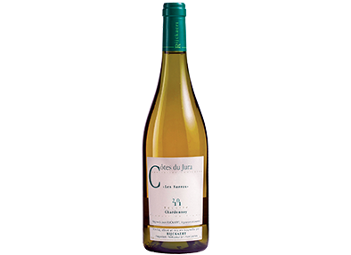
Singulier
Vin blanc
Son nez légèrement évolué sur des notes de noix et d’agrumes se retrouve en bouche et offre une véritable personnalité à ce vin qui accompagnera sans complexe une fourme d’Ambert ou un roquefort. chez Carrefour14,6
9,90 €
Côtes-du-jura blanc 2011, cuvée Les Sarres, Jean Rijckaert
-
Explosif
Vin rouge
Son nez explosif sur le fruit et le poivre laisse place à une bouche juteuse et ample. A marier avec un civet de lapin. sur www.lavinia.fr16,6
13,20 €
Anjou rouge 2012, cuvée du Petit Clos, Nicolas Reau (bio)
Coup de coeur -
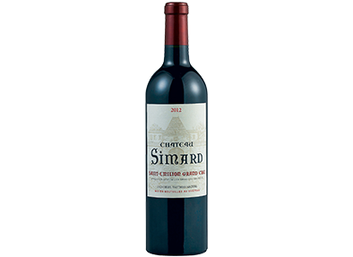
Onctueux
Vin rouge
Son nez intense de cerise noire laisse place à une bouche veloutée. Ce vin se garde quelques années en cave. Avec une volaille. chez Magasins U15,2
14,90 €
Saint-émilion grand cru 2012, Château Simard
-

Velouté
Vin rouge
Un nez de fruits mûrs légèrement confiturés et une bouche veloutée bien équilibrée pour ce haut-médoc. Un classique à déguster sans attendre. chez Franprix14,8
14,99 €
Haut-médoc 2004, Château Soudars
-
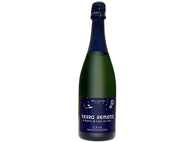
Vif
Cava
Idéal pour découvrir un cava d’Espagne très bien fait. Son nez citronné offre de la vivacité, la bouche est complexe, intense et tendue. Une excellente alternative au champagne pour l’apéritif. sur www.lerepairedebacchus.com14,5
14,90 €
Cava brut nature BSA (bio), Terra Remota
-
Agréable
Rouge
La pointe mentholée de la bouche, gourmande, apporte de la fraîcheur à ce vin très agréable en accompagnement d’une cuisine provençale. sur www.lerepairedebacchus.com14,3
13,90 €
Lubéron rouge 2011, Château La Verrerie
-
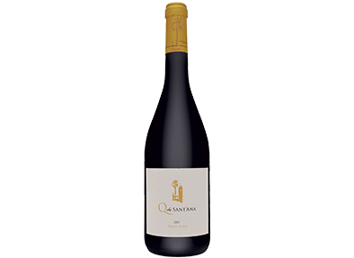
Inattendu
Rouge
Ce vin portugais à la bouche puissante offre une expression originale du pinot noir. sur www.lerepairedebacchus.com14,3
14,40 €
Terras do Sado, pinot noir 2011 (Portugal), Quinta de Sant’Ana
-
Raffiné
Rouge
Une expression élégante du pinot noir avec une bouche fruitée et une belle rondeur. Un bourgogne idéal pour accompagner un foie de veau poêlé. chez Casino14,3
12,95 €
Côtes-de-nuits-villages rouge 2012, Domaine Dubois et fils
-
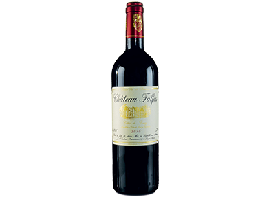
Complexe
Rouge
Beaucoup de prestance pour ce vin au nez d’une belle complexité où pointent des notes de fruits. Puissante, la bouche reste soyeuse. Avec une viande rouge. chez Naturalia13,9
12,70 €
Côtes-de-bourg 2010, Château Falfas
-
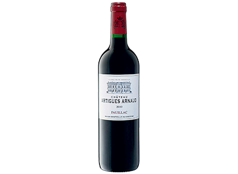
Classique
Rouge
D’une belle complexité aromatique légèrement boisée, ce pauillac offre une grande richesse tannique et une jolie longueur. Avec une terrine de faisan. chez Intermarché16
18,50 €
Pauillac 2010, Château Artigues Arnaud
Coup de coeur -
Délicat
Rouge
Ce champagne, le seul de notre sélection, fait preuve de beaucoup de finesse et offre une bouche ample et élégante. Un excellent rapport qualité-prix. sur www.lavinia.fr15,8
17 €
Champagne brut réserve, Jean Graviers
Coup de coeur -
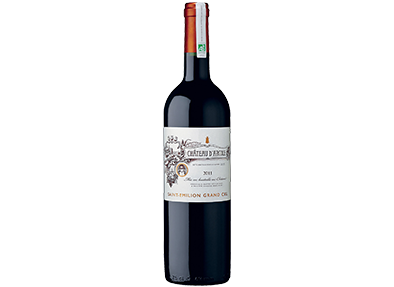
Sincère
Rouge
Ce vin offre une belle sincérité avec son nez de cassis légèrement confituré, sa belle matière en bouche, aux tanins délicats et fruits croquants. Pour accompagner des cèpes. chez Monoprix15,4
15,95 €
Saint-émilion grand cru 2011 (bio), Château d’Arcole
Coup de coeur -
Pur
Rouge
L’un des domaines engagés dans le renouveau du beaujolais depuis de longues années démontre l’essentiel avec ce morgon : une bouche droite et pure sur le fruit et la fraîcheur. chez Franprix15,1
16,90 €
Morgon 2012, Marcel Lapierre
-
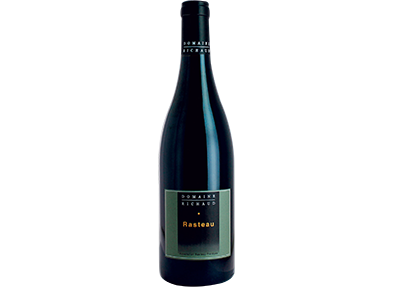
Soyeux
Rouge
Alliant puissance et douceur de la matière, ce rasteau offre des notes d’oranges confites et une finale très plaisante. Le vin idéal pour accompagner un canard à l’orange. sur www.lavinia.fr15
15 €
Rasteau 2012, côtes-du-rhône (bio), Domaine Marcel Richaud
-
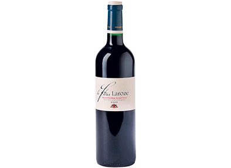
Vanillé
Rouge
Un nez de fruits noirs et de fleurs, légèrement vanillé, une bouche fruitée avec une belle matière. A ouvrir d’ici trois ou quatre ans. chez Lidl14,3
18,89 €
La Fleur, saint-émilion grand cru 2009, Laroze
-
Savoureux
Rouge
Belle évolution pour ce madiran aux notes de fruits secs et d’épices : la bouche est gourmande et élégante, et la finale,sur la fraîcheur. A ouvrir avec un confit de canard. chez Nicolas14,2
15,90 €
Sacré cœur, madiran 2009, Château Perron Segondine
-
Voluptueux
Rouge
Ce côtes-du-rhône a des airs de famille avec son prestigieux cousin d’appellation châteauneuf-du-pape. Comme lui, il allie puissance et volupté. Avec un gigot d’agneau. sur www.lerepairedebacchus.com14,2
15,40 €
Coudoulet de Beaucastel, côtes-du-rhône rouge 2011, Famille Perrin